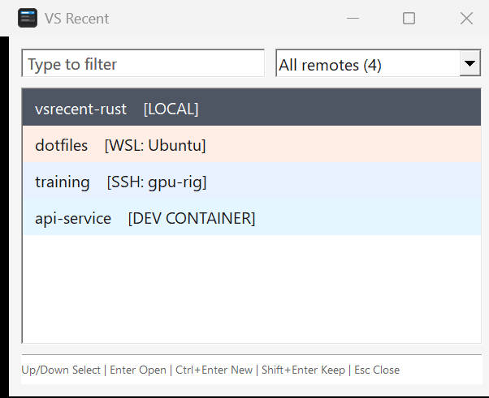

Open a recent VS Code folder, fast
I wanted a hotkey that would open a recent VS Code folder. Press Win+1, type a few characters, hit Enter.
VS Recent is a small native Rust executable for Windows on ARM and x64. It can open local folders plus WSL, SSH, Dev Containers, Codespaces, tunnels, and GitHub repositories.
Use ARM64 on Windows on ARM devices. Use x64 on Intel and AMD Windows PCs. View release notes.
Free and open source under the MIT License.

I want this to display immediately when I hit a hotkey, so that I can open a vscode folder.
Install it and pin it
Put VS Recent in the first taskbar slot and Win+1 becomes a shortcut to your recent folders. The filter stays focused, so most launches are a few keystrokes followed by Enter.
- Type several words to narrow the list. Every word must match.
- Press
Ctrl+Enterto open a new VS Code window orShift+Enterto keep the picker open. - Use the remote menu when you only want local, WSL, SSH, or container folders.
You can also install it with WinGet:
winget install --id calebrob6.VSRecent --exact
Startup
Rust vs. C# startup
The first version was C# and WinForms. It did the job, but the window took 359-390 ms to appear. That is a long wait for a hotkey.
The Rust version took 63-85 ms on the same machine. It starts less software, and it draws the window before it reads VS Code history.
Measured startup time
The dashed line marks 100 ms, the point where a response starts to lose its feeling of immediacy.
Jakob Nielsen uses 100 ms as the limit for a response to feel instantaneous in Response Times: The 3 Important Limits. The VS Recent ranges came from warm startup tests during the Rust rewrite.
What C# did before the window appeared
The C# build ran this work on the UI thread, one step after another:
- Start .NET and WinForms.The self-contained executable loads CoreCLR, managed code support, garbage collection, and the WinForms framework.
- Read the VS Code database.
LoadEntries()opens SQLite before a form exists. - Prepare every row.The app parses JSON, classifies remote URIs, creates labels, and builds the text used for searching.
- Build the form.WinForms creates its controls, fonts, layout rules, event handlers, and drawing state.
- Paint.
Application.Run(form)is what finally shows the window.
What Rust does before the window appears
The Rust build shows a window first, then loads history:
- Load the native executable.Windows maps a roughly 250 KB program. There is no managed runtime to start.
- Create five Win32 controls.The filter, remote menu, list, separator, and footer are native Windows controls.
- Paint.
ShowWindowandUpdateWindowdisplay the picker with a loading row. - Read history on another thread.The worker opens SQLite, parses JSON, and sends the finished rows back to the window.
Fifty megabytes became 250 kilobytes
The old x64 release was 50.4 MB because it carried the .NET runtime and WinForms inside one self-contained file. That saved users from installing .NET, but the program still had to find and start the embedded runtime.
The Rust x64 release is about 250 KB. It contains the app and JSON parser, then uses Windows for controls, drawing, SQLite, and process launching.
Windows does not read every byte of an executable at startup, so the size cut is not the whole story. The bigger change is that SQLite now happens after the window is already on screen.
SQLite stayed the same
Both versions call Windows' winsqlite3.dll, open the database read-only, parse the same JSON, keep the same folder URIs, and launch VS Code with --folder-uri. Rust still does that work. It just does it after the first frame.
How I timed this
These are warm launches on one Windows machine. That is closer to hitting Win+1 a few times in a workday than to a reboot-and-measure test.
The clock stops when the window appears. The list can still say "Loading recent folders..." for a moment. So this is hotkey-to-window time, not time until every row is filled in.
I re-run the same benchmark on later changes. After adding single-instance activation, a 50-run ARM64 test moved the median from 66.18 ms to 66.99 ms.
The Win32 version is more work to maintain
WinForms handled layout, events, control lifetime, accessibility, DPI scaling, and a lot of the drawing. In the Rust version I have to do those myself: window messages, raw handles, GDI objects, theming, DPI changes, and cleanup. The picker starts faster. The UI code is also easier to break.